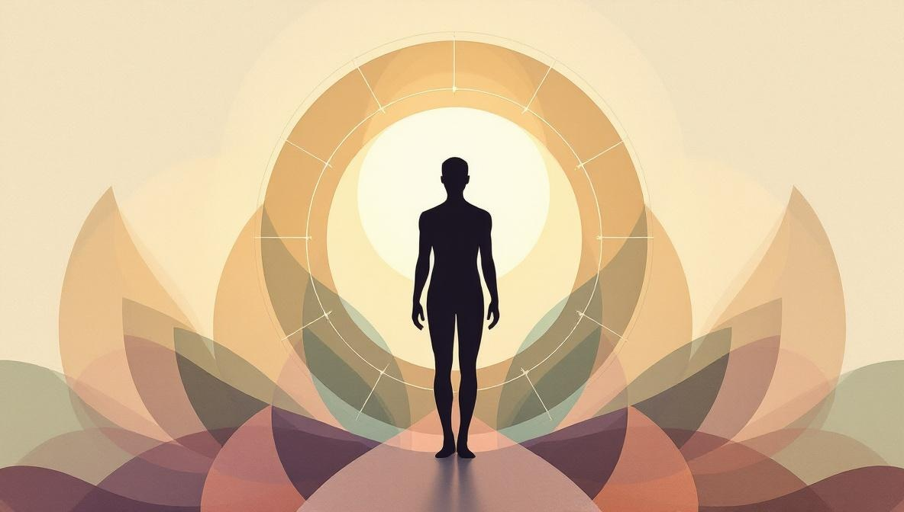
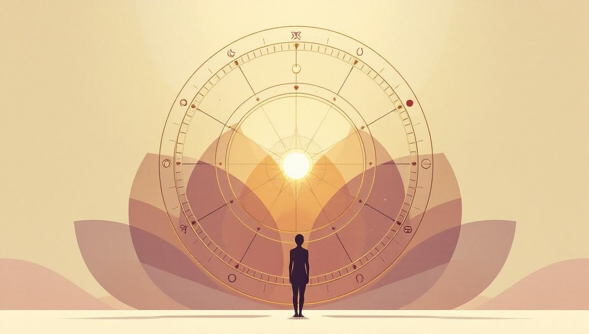

Cosa sono le case astrologiche?
Il tema natale è un cerchio diviso in 12 settori, chiamati case. Ogni casa corrisponde a una specifica area della vita. Quando un pianeta si trova in una determinata casa al momento della tua nascita, esprime la sua energia in quell'area della tua esistenza.
Per esempio: Venere nella Settima Casa colloca l'energia dell'amore, dell'armonia e della bellezza nel settore delle relazioni e delle partnership. La stessa Venere nella Seconda Casa esprimerebbe quelle stesse qualità nel settore del denaro, dei beni e dei valori.
Le case si calcolano in base all'ora e al luogo esatti di nascita — è per questo che due persone nate lo stesso giorno ma in città diverse possono avere temi natali molto diversi. Il punto iniziale della Prima Casa — chiamato Ascendente — è il grado zodiacale che sorgeva all'orizzonte est al momento della nascita.
Le 12 case in sintesi
Prima di entrare nel dettaglio di ogni casa, ecco una tabella di riferimento rapido:
| Casa | Area di vita | Pianeta governatore |
|---|---|---|
| 1ª | Identità, apparenza, come gli altri ti vedono | Marte / Ariete |
| 2ª | Denaro, beni, valori personali | Venere / Toro |
| 3ª | Comunicazione, fratelli, viaggi brevi | Mercurio / Gemelli |
| 4ª | Casa, famiglia, radici, vita privata | Luna / Cancro |
| 5ª | Creatività, figli, gioco, romanticismo | Sole / Leone |
| 6ª | Lavoro, salute, routine quotidiane, servizio | Mercurio / Vergine |
| 7ª | Partnership, matrimonio, nemici dichiarati | Venere / Bilancia |
| 8ª | Trasformazione, risorse condivise, morte e rinascita | Plutone / Scorpione |
| 9ª | Filosofia, viaggi, istruzione superiore, credenze | Giove / Sagittario |
| 10ª | Carriera, immagine pubblica, scopo di vita | Saturno / Capricorno |
| 11ª | Comunità, amici, gruppi, ideali sociali | Urano / Acquario |
| 12ª | Inconscio, solitudine, cose nascoste, spiritualità | Nettuno / Pesci |

Le 12 case nel dettaglio
Prima Casa — Identità e Ascendente
La Prima Casa — chiamata anche Ascendente — è la parte più immediatamente visibile del tuo tema. Rappresenta il tuo aspetto fisico, la prima impressione che dai agli altri e il tuo modo istintivo di affrontare il mondo. Il segno sulla cuspide della Prima Casa (il tuo Segno Ascendente) descrive la 'maschera' che mostri in pubblico — non chi sei nel profondo, ma come ti presenti.
Seconda Casa — Denaro e Valori
La Seconda Casa governa il tuo rapporto con il denaro, i beni materiali e i valori personali. Ti dice come guadagni, spendi e ti relazioni alla sicurezza economica. Ma va oltre il denaro: mostra anche cosa valorizzi di più nella vita — cosa ti dà senso di valore e stabilità. I pianeti qui hanno una forte influenza sui modelli finanziari e sull'autostima.
Terza Casa — Comunicazione e Mente
La Terza Casa governa la comunicazione in tutte le sue forme — parlare, scrivere, ascoltare, negoziare. Comprende anche i viaggi brevi, l'ambiente immediato (quartiere, città), i fratelli e la prima istruzione scolastica. I pianeti qui influenzano come pensi, come ti esprimi e come ti relazioni alle persone più vicine nella vita quotidiana.
Quarta Casa — Casa e Radici
La Quarta Casa — nota come Imum Coeli o IC — è la base del tema. Rappresenta la tua casa, la famiglia di origine, le radici emotive e la vita privata — il lato di te che non mostri in pubblico. Descrive anche il tuo rapporto con il genitore che ti ha fornito sicurezza emotiva (tradizionalmente la madre, anche se varia a seconda dell'approccio di lettura). I pianeti qui influenzano le fondamenta emotive più profonde della personalità.
Quinta Casa — Creatività e Piacere
La Quinta Casa è dove giochi, crei e ti esprimi senza filtri. Governa gli hobby, l'espressione artistica, le avventure romantiche (non le partnership impegnate — quelle sono della Settima Casa), i figli, i giochi e tutto ciò che ti porta gioia autentica. Una Quinta Casa molto occupata indica spesso una vita creativa vivace o un profondo bisogno di autoespressione.
Sesta Casa — Lavoro e Salute
La Sesta Casa governa le routine quotidiane, le abitudini lavorative, la salute fisica e il servizio agli altri. È la casa del 'come' della vita di tutti i giorni — come gestisci il tempo, come ti prendi cura del corpo, come ti relazioni a colleghi e dipendenti. A differenza della Decima Casa (che riguarda la carriera e la vocazione), la Sesta Casa riguarda i compiti quotidiani che compongono la vita lavorativa.

Settima Casa — Partnership e Relazioni
La Settima Casa è la casa degli altri significativi: partner romantici, partner commerciali e — nell'astrologia tradizionale — i nemici dichiarati (chi ti affronta direttamente). Il segno sulla cuspide della Settima Casa (il Discendente) spesso descrive il tipo di persone verso cui sei attratto, o le qualità che proietti sugli altri. I pianeti qui hanno una forte influenza su come ti comporti nelle relazioni uno-a-uno.
Ottava Casa — Trasformazione e Risorse Condivise
L'Ottava Casa è una delle più fraintese in astrologia. Non significa letteralmente morte — significa trasformazione, cambiamento profondo e rigenerazione. Governa: le finanze condivise (eredità, tasse, il denaro del partner), la sessualità come forza trasformativa, la profondità psicologica, le dinamiche di potere nascoste. Le persone con molti pianeti nell'Ottava Casa hanno spesso una qualità intensa e investigativa, e una tendenza all'indagine profonda — di sé e degli altri. Leggi la guida completa all'Ottava Casa →
Nona Casa — Filosofia e Viaggi Lunghi
La Nona Casa governa tutto ciò che espande la tua visione del mondo: i viaggi lunghi, l'istruzione superiore, la filosofia, la religione, il diritto e le culture straniere. È la casa delle credenze — ciò che ritieni vero sul mondo e sul significato dell'esistenza. I pianeti qui indicano il tuo rapporto con le idee, se sei un insegnante o uno studente per natura, e la tua tendenza a esplorare oltre il familiare.
Decima Casa — Carriera e Immagine Pubblica
La Decima Casa — chiamata anche Medio Cielo o MC — si trova in cima al tema e rappresenta il ruolo pubblico, la carriera, lo status sociale e lo scopo di vita. È il punto più visibile del tema natale e descrive l'immagine che proietti nel mondo — l'identità professionale, la reputazione, l'eredità che lasci. Il genitore che ti ha spinto verso l'ambizione (tradizionalmente il padre) è rappresentato anche qui.
Undicesima Casa — Comunità e Ideali
L'Undicesima Casa governa le amicizie, i gruppi, le associazioni e gli ideali sociali. Rappresenta la comunità che scegli — non la famiglia in cui sei nato (Quarta Casa), ma le persone che riunisci attorno a una visione o causa condivisa. Indica anche le speranze e le aspirazioni a lungo termine. I pianeti qui influenzano la qualità delle tue amicizie e il tuo rapporto con obiettivi collettivi o umanitari.
Dodicesima Casa — L'Inconscio e la Solitudine
La Dodicesima Casa è il settore più nascosto del tema. Governa l'inconscio, i sogni, i nemici nascosti, le istituzioni (ospedali, prigioni, monasteri), la solitudine volontaria e il ritiro spirituale. I pianeti qui operano sotto la soglia della consapevolezza — la loro energia si sente prima di essere compresa. La Dodicesima Casa è associata anche al karma e ai modelli ereditati dalle generazioni precedenti. Nonostante la sua reputazione di casa 'difficile', può essere fonte di straordinaria profondità intuitiva e creativa.
Come leggere le case nel tuo tema natale: un metodo pratico
Leggere il tuo tema natale è più semplice di quanto sembri, una volta che hai un metodo chiaro. Ecco quattro passi per iniziare:
- Identifica quali case sono occupate. Guarda dove si trovano i pianeti. Le case con più pianeti indicano aree di vita con molta attività e complessità.
- Nota le case vuote. Una casa vuota non è un problema — significa che quell'area di vita procede in modo relativamente fluido. Controlla il segno sulla sua cuspide per suggerimenti.
- Concentrati sulle case dei pianeti personali. Sole, Luna, Mercurio, Venere e Marte sono i pianeti più personali. Le case in cui ricadono descrivono le tue motivazioni fondamentali e l'esperienza quotidiana.
- Guarda prima le case angolari. La Prima, Quarta, Settima e Decima Casa (dette angolari) sono le più potenti — i pianeti lì hanno un impatto sproporzionato sulla personalità.
Case e segni: una distinzione fondamentale
Una delle fonti di confusione più comuni in astrologia è la differenza tra un segno e una casa. Non sono la stessa cosa.
- I segni descrivono la qualità dell'energia planetaria — lo stile, il tono e l'approccio. L'Ariete è diretto e impulsivo; la Bilancia è diplomatica ed equilibrata.
- Le case descrivono il dove — l'area di vita in cui quell'energia si esprime.
Una combinazione pianeta-segno-casa ti dà il quadro completo: quale tipo di energia (pianeta), espressa come (segno), applicata dove (casa). Per esempio: Saturno (restrizione e struttura) in Capricorno (ambizioso e disciplinato) nella Decima Casa (carriera) descrive qualcuno che costruisce la propria vita professionale lentamente, metodicamente e con visione a lungo termine.
Quando leggere il tuo tema diventa utile?
Comprendere le tue case diventa particolarmente prezioso in due situazioni:
1. Quando sei a un bivio. Se stai decidendo sulla carriera (Decima Casa), sulle relazioni (Settima Casa) o su un grande trasferimento (Quarta Casa), sapere quali pianeti sono attivi in quelle aree — e come i pianeti in transito interagiscono con il tuo tema natale — può darti intuizioni concrete, non incoraggiamento vago.
2. Quando vuoi comprendere schemi ricorrenti. Se certi temi continuano a ripresentarsi nella tua vita — conflitti nelle relazioni, instabilità finanziaria, difficoltà con l'autorità — le case e i loro governatori possono indicarti la fonte di quegli schemi, senza interpretazione mistica.
Un astrologo esperto non legge un tema natale per 'prevedere' il tuo futuro — lo usa come una mappa per avere una conversazione più mirata e utile su dove sei davvero e quali opzioni hai.
Pronto a esplorare il tuo tema natale?
Holistic Unity ti mette in contatto con astrologhi verificati per una lettura del tema natale online — concentrata sulle case e le aree della tua vita che contano di più in questo momento.
Trova un AstrologoFonti e riferimenti
- Enciclopedia Britannica — Astrologia: britannica.com/topic/astrology.
- Centro Italiano di Astrologia (CIDA): principale associazione professionale italiana di astrologia.
- Riferimento storico: il sistema delle 12 case astrologiche affonda le radici nella tradizione ellenistica (II-I sec. a.C.); il primo testo sistematico noto è il Tetrabiblos di Claudio Tolomeo (II sec. d.C.).
- Nota editoriale: l’astrologia non è una scienza riconosciuta dalla comunità accademica. La presentiamo come tradizione simbolica e interpretativa, non come metodo predittivo per decisioni mediche, finanziarie o relazionali.
Domande frequenti
Cosa sono le case astrologiche?
Le case astrologiche sono 12 settori del tema natale che rappresentano le diverse aree della vita — identità, denaro, comunicazione, famiglia, creatività, lavoro, relazioni, trasformazione, filosofia, carriera, comunità e spiritualità. Ogni casa indica in quale ambito un pianeta esprime la sua energia.
Qual è la casa più importante del tema natale?
Non esiste una casa 'più importante' in assoluto. La Prima Casa (l'Ascendente) è spesso la più visibile perché definisce la personalità esteriore. Ma la casa con più pianeti nel tuo tema personale è quella dove si concentra maggiore energia — e quindi merita attenzione speciale.
Come si calcolano le case astrologiche?
Le case si calcolano in base alla data, ora e luogo di nascita esatti. Il sistema di case più diffuso è il Placidus, ma ne esistono altri (Koch, Whole Sign, Equal House). Il punto iniziale — la cuspide della Prima Casa — è l'Ascendente: il grado dello zodiaco che sorgeva all'orizzonte est al momento della nascita.
Cosa significa avere una casa vuota nel tema natale?
Una casa vuota — senza pianeti — non è una mancanza. Significa semplicemente che quell'area della vita si svolge in modo più lineare, senza le tensioni che i pianeti portano. Il segno zodiacale che occupa la cuspide di quella casa, e il pianeta che governa quel segno, danno comunque indicazioni importanti.
Qual è la differenza tra casa astrologica e segno zodiacale?
I segni zodiacali descrivono come un pianeta esprime la sua energia — lo stile e la qualità. Le case descrivono dove quell'energia si manifesta nella vita — in quale settore dell'esistenza. Per esempio, Marte in Scorpione (segno) nella Settima Casa (relazioni) indica un'energia intensa e trasformativa che si esprime principalmente nelle relazioni con gli altri.
Cosa significa l'Ascendente in astrologia?
L'Ascendente — o Segno Ascendente — è la cuspide della Prima Casa: il segno zodiacale che sorgeva all'orizzonte est al momento della nascita. Rappresenta la maschera sociale, il modo in cui ci presentiamo al mondo e come gli altri ci percepiscono al primo incontro. Cambia ogni due ore circa, quindi l'ora di nascita precisa è fondamentale per calcolarlo.